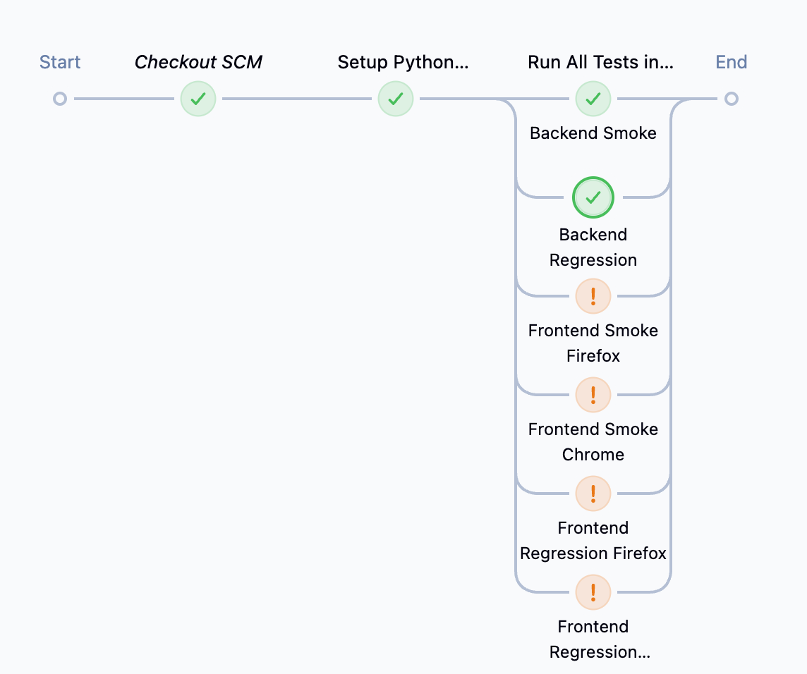
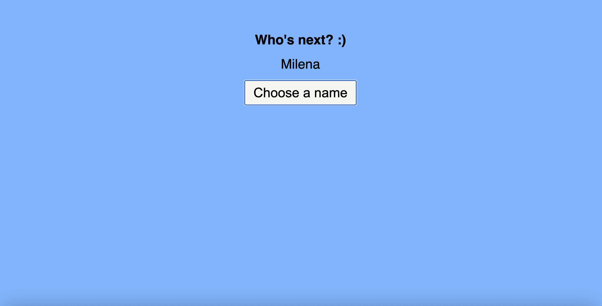

Projects
E-commerce Automation Framework
Python · Pytest · Selenium · API Testing · CI/CD (GitHub Actions & Jenkins)
- Automates e-commerce user flows like login, add-to-cart, checkout
- CI/CD pipelines using GitHub Actions and Jenkins
- Allure reports deployed to GitHub Pages after running all front-end and back-end tests
- Jenkins used to run backend regression tests and visualize results
Jenkins Pipeline Overview: Shows the pipeline running tests in parallel (frontend & backend).
Allure report: Generated via GitHub Actions CI/CD pipeline. View Live Report

Jenkins Backend Regression Console: Shows the CI/CD execution of backend tests.
Jenkins Backend Regression Test Results: Displays test results for backend regression.
Name Selector App
Python · Flask · Docker · PyTest
- Flask web application that randomly selects a name from a predefined list
- Session management ensures the same name is not selected twice consecutively
- Automated tests written using PyTest to validate functionality and edge cases
- Dockerized for consistent deployment and easy sharing across environments
App Screenshot: Shows the Name Selector interface in action.
GitHub Repository: View Code
Dockerized Deployment: The app is containerized using Docker for consistent local and cloud deployment.